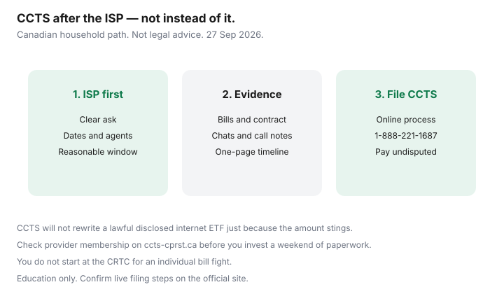

Internet · Canada
How to File a CCTS Complaint About Your Canadian ISP (Billing, Contracts, Service)
Canadians often abandon billing and contract fights because the Commission for Complaints for Telecom-television Services (CCTS / CPRST) feels opaque. It is not a magic refund button — and it is not the CRTC’s front door — but it is the independent complaint body for many home-internet disputes after you exhaust the ISP’s process. This guide is a household walkthrough for billing, contracts, and service issues. Not legal advice. Facts stamped ~22 Sep 2026.
Disclosure: Education only. Saving Optimizer does not file CCTS complaints for you and has no ISP partnership on this page. No natural affiliate angle — do not treat this as a lead-gen funnel.
Key takeaways
- CCTS covers many billing, contract, and service-quality issues with participating providers after you try the ISP first.
- It generally cannot rewrite an allowed contracted fee (including a lawful internet ETF or non-return charge) just because you dislike the amount.
- Document dates, reference numbers, screenshots, and call notes before you file.
- Phone: 1-888-221-1687 (confirm on ccts-cprst.ca). File online when ready.
- CCTS decisions on a complaint are not appealed to the CRTC; broader Code questions are a different path.
What the CCTS covers for internet (and what it does not)
In plain language, CCTS helps when a participating telecom or TV provider’s conduct conflicts with your contract, the applicable Codes (including the Internet Code for listed providers), or fee rules such as those explained after CRTC 2026-43. Typical internet topics: wrong rate after a promo, unexplained charges, contract summary mismatches, failed installs, and service issues the ISP did not resolve.
It is not for:
- General “prices in Canada are too high” policy complaints.
- Asking CCTS to invent a cheaper plan or delete a lawful disclosed ETF.
- Non-participating providers — check membership before you invest hours.
- Suing for large civil damages — that is court or small claims territory.
Exhaust the ISP’s complaint process first—how to document it
- Contact the provider’s support and, if needed, loyalty/escalation with a clear ask (credit X, correct rate Y, repair Z).
- Save chat transcripts, email threads, and dated call notes (agent name, time, promise).
- Give a reasonable window for a fix — CCTS expects a real attempt, not one ignored tweet.
- When the ISP refuses or ghosts, you have a paper trail for the filing form.

How to file, timelines, and what outcomes look like
Use the official CCTS online process (and phone line for guidance). You will describe the issue, the resolution you want, and the steps already taken. Outcomes vary: credits, corrected billing, process fixes, or a finding that the charge was allowed. Timelines move with caseload — keep paying undisputed amounts so you do not add a collections problem while a disputed line is reviewed.
Billing vs contract vs service issue framing
| Frame | Examples | Evidence focus |
|---|---|---|
| Billing | Wrong rate, double charge, unexplained fee after 12 Jun 2026 rules | Invoices, promo emails, CCTS/CRTC fee notes |
| Contract | Summary mismatch, missing ETF schedule, notice failures | Contract PDF, order confirmation, Code clauses |
| Service | Chronic outages, install no-shows, repair loops | Ticket numbers, speed tests, outage dates |
Evidence pack: bills, chats, call notes
- Last 3–6 invoices (PDF).
- Contract / critical information summary.
- Chat and email exports with timestamps.
- Call log: date, time, agent, promise, follow-up due date.
- Photos of equipment serials if non-return or install disputes.
- One-page timeline you write yourself — CCTS readers are human.
When to escalate beyond CCTS
If the provider is not a CCTS member, use the membership directory and the provider’s own ombuds path. For alleged Code interpretation fights the provider claims not to understand, the Internet Code points industry to CRTC process — households still start with the ISP and CCTS for complaint resolution. Parallel paths: provincial consumer protection offices for some contract issues, and small claims for documented dollar losses. None of those replace returning the modem on time.
Sources & date stamps
- ccts-cprst.ca — how to file, membership, fee explainers (posted material re-read ~22 Sep 2026, including 2 Sep 2026 fee page references used elsewhere on this site).
- crtc.gc.ca — Internet Code simplified page; CRTC 2026-43 context (~22 Sep 2026).
- Saving Optimizer: Internet Code plain English; Internet ETFs after 2026-43.
Frequently asked questions
Do I call the CRTC first?
No. For a household complaint about your ISP, try the provider, then CCTS. The CRTC is not the call-centre for individual bill fights.
Can CCTS wipe my early cancellation fee?
Not merely because you find it expensive. If the ETF is disclosed and allowed under the Internet Code, CCTS will not rewrite the dollar amount. It can help if the fee violates the contract, Codes, or prohibited-fee rules.
How long should I wait on the ISP before filing?
Long enough to show a real attempt with dates — not months of silence after one chat. If the provider closes the ticket with a refusal, you are usually ready.
Is Fizz or TekSavvy covered?
Many independents and flankers participate in CCTS even when a given Internet Code clause lists only large facilities-based providers. Check the live membership list for your brand.
Should I stop paying my bill during a complaint?
Keep paying undisputed charges. Withhold only with advice you trust; unpaid balances can trigger collections while the dispute runs.